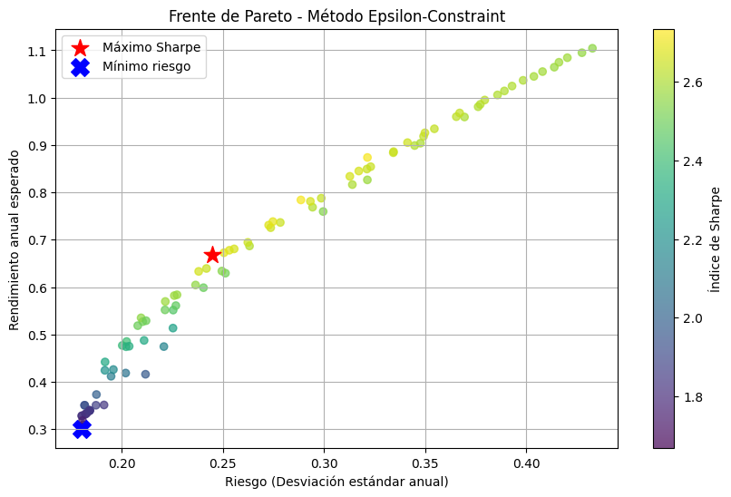

Proyecto Optimización Multiobjetivo para Portafolios
Proyecto de investigación sobre optimización multiobjetivo, enfocado en el estudio de la optimalidad de Pareto y su aplicación al modelo de Markowitz para la selección de portafolios financieros. Se implementaron en Python los métodos Monte Carlo, ε-constraint y suma ponderada.